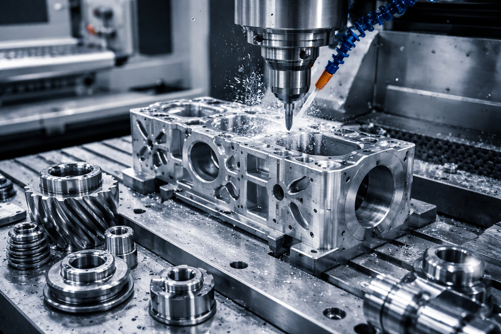

Precisión y calidad industrial
Fabricación de piezas con alta exactitud y tolerancias cerradas.
Uso de maquinaria especializada y procesos controlados.
Materiales: acero, aluminio, inoxidable y más.
Servicios
✔ Torneado
✔ Fresado
✔ Corte y ajuste
✔ Fabricación de herramental
Aplicaciones
Industria automotriz, manufactura avanzada y líneas de producción.